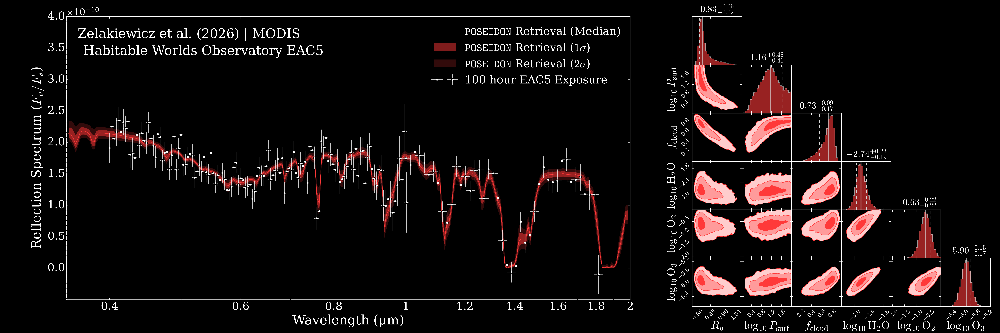
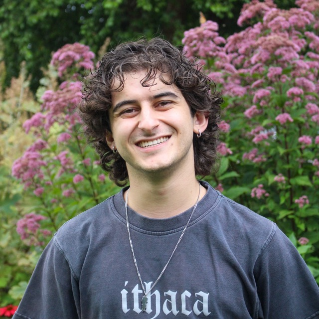
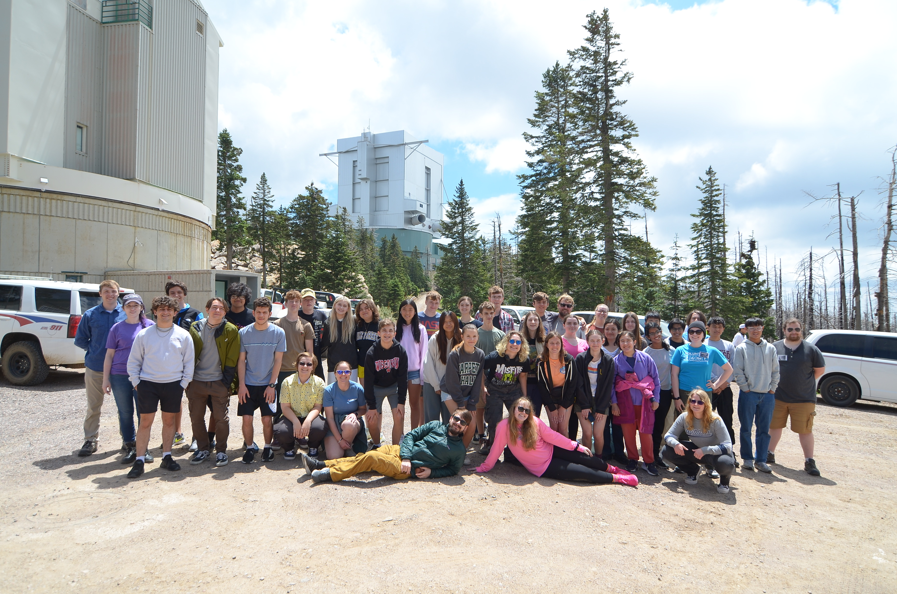
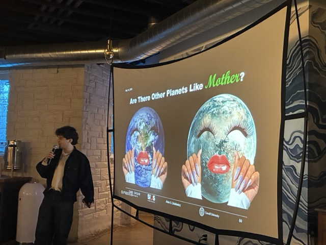

research. |
Future space telescopes, such as the Habitable Worlds Observatory (HWO), will have the capability to directly image and spectrally characterize terrestrial exoplanets. Atmospheric retrievals are a powerful tool for interpreting these spectra, allowing us to infer the atmospheric properties and potential habitability of these worlds. I work to understand what we can learn about terrestrial exoplanets with retrievals, including what may complicate our interpretations, such as degeneracies and model assumptions. |
 |
I work to understand the science yield of future exoplanet direct imaging missions, such as HWO, through mission simulations. These simulations couple detailed astrophysical models of exoplanet populations with realistic instrument models to predict the number and types of planets that we may detect and characterize with these missions. This work is critical for informing the design of these missions and maximizing their scientific return. |
about. |
 |
My name is Aiden Zelakiewicz, and I am currently a PhD candidate in the Department of Astronomy at Cornell University. I started at Cornell after receiving my B.S. in Astronomy & Astrophysics from The Ohio State University in 2023. My research focuses on detecting and characterizing terrestrial exoplanets in reflected light. These planets are the next frontier in exoplanet science, and the goal of NASA's next flagship-class astrophysics mission, the Habitable Worlds Observatory (HWO). My work couples detailed atmospheric and surface models of terrestrial exoplanets with realistic instrument models to better understand the spectral science yield with algorithms such as atmospheric retrievals. I am an avid proponent of open source software, and actively contribute to the POSEIDON and EXOSIMS packages, which are used for atmospheric retrievals and exoplanet mission simulations, respectively.
I also am incredible passionate about science outreach, education, and community building. I have been involved in a number of outreach and education initiatives, including the University of Arizona's Astronomy Camp, developing the Cornell University Research Experience for Undergraduates (REU) Python Bootcamp, and leading the TA training for astronomy graduate students. I serve as the president of the Astronomy Graduate Network, acting as a liaison between the graduate student body and the department while also organizing social events.
I also try to have a life outside of astronomy. To make sure I never break out of the astronomy graduate student stereotype, you may find me at your local climbing gym. I further destroy my fingers by playing guitar (badly). My rig is an Ibanez QX52 and Schecter Demon 7 routing to a Boss Katana. I also enjoy playing video games and have recently started a vintage video game collection, including a SNES, N64, Wii (yes, that's "vintage" now), DS Lite, GBA, and GB Color.
I am a counselor for the University of Arizona's Astronomy Camp, a week-long summer camp for middle and high school students interested in astronomy. I was introduced as a counselor by Dr. Wayne Schlingman during the summer of my last year at The Ohio State University in 2023. I was hooked. I have returned every summer since, being not only the most distracting counselor, but also a lead in teaching students how to search for exoplanets with transit photometry. We have validated a handful of TESS objects of interests with the campers, and they are always thrilled to contribute to real scientific discoveries. I also teach campers how to use Python, which for many campers is their first experience with coding. I've gone on to mentor some of these campers after camp, furthur developing their programming skills and introducing them to the world of astronomy research. |
 |
I love to yap; it is a problem. And one excuse for me to yap about things I am passionate about is through Astronomy on Tap, a public outreach event where astronomers give talks about their research at bars. I have given three Astronomy on Tap events in Ithaca, NY and Madison, WI and will be giving another in Rochester, NY soon. I have also given public talks in Tucson, AZ on the search for exoplanets as well as a lecture on the Habitable Worlds Observatory for the Cornell Astronomical Society Spring Lecture Series. I try my hardest to make these talks as fun as possible, with more jokes than are probably necessary :) |
 |
I serve as president of the Astronomy Graduate Network (AGN), where I organize social events for the graduate student body and act as a liaison between graduate students and the department. I attend department field meetings to provide feedback to the department on behalf of the graduate student body and inform students on important developments that would otherwise be difficult to keep track of. In response to the department retreat held in 2023, which highlighted the need for a department lounge, I applied for and received a $4,500 grant from the Cornell Graduate Professional Student Association to fund the renovation of a common space. This helped spearhead forward the formal designation of a department lounge, which will be critical for building a sense of community within the department. Renovations are expected to begin in the fall of 2026 once the funding is fully dispersed. I also organize social events for the department, such as starting the binannual Department of Astronomy BBQ and he astronomy movie night at Cinemopolis, hosted by AGN, which brings together students, post-docs, faculty, and staff. As a member of AGN, I also participate in outreach events that we host, such as the Museum in the Dark hosted at the Museum of the Earth in Ithaca, NY.
Teaching and bringing up the next generation of astronomers is something I have found to be truly rewarding. I have been involved in a handful of mentorship and teaching initiatives, including leading the Cornell Astronomy REU Python Bootcamp and the TA training for astronomy graduate students at Cornell. I have mentored undergraduate students since I was a senior undergraduate through The Ohio State University's Polaris program, a joint program between the astronomy and physics departments that pairs undergraduates with graduate student mentors. Despite being an undergraduate myself, I was given the opportunity to mentor a first-year undergraduate student and guide her through her first research project. I have also mentored a number of high school students through the University of Arizona's Astronomy Camp. Some students want to continue learning about astronomy after camp, and I tought them how to use Python for data analysis.
I lead the TA training for astronomy graduate students at Cornell in a joint program with the Department of Physics. This training includes lessons on microteaching, inclusive pedagogy, and best practices for teaching the introductory astronomy course sections. I inform the new TAs on how to handle common issues that arise in classrooms, such as disruptions, grade disputes, and students having issues with the course material.